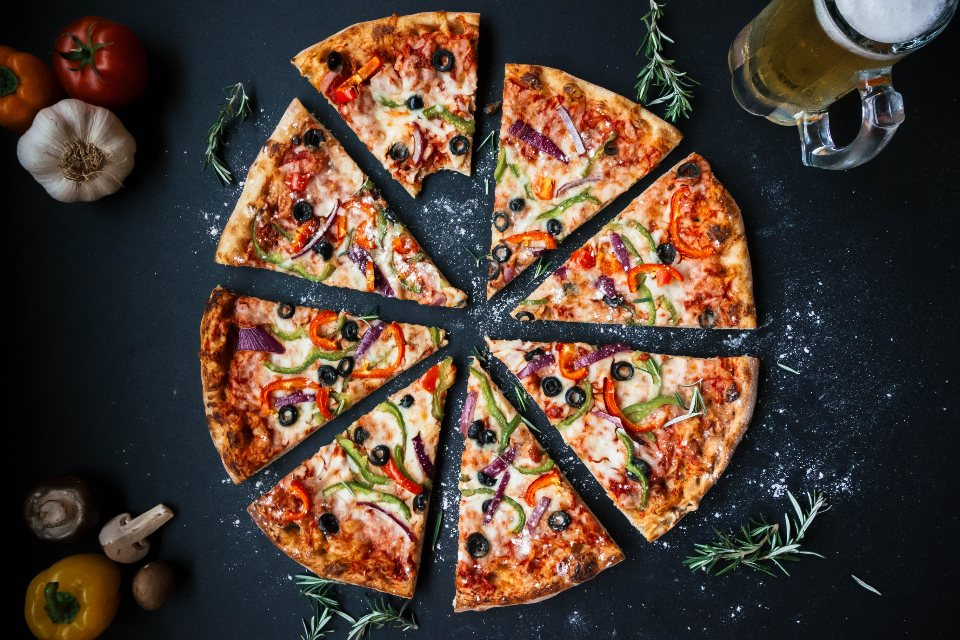
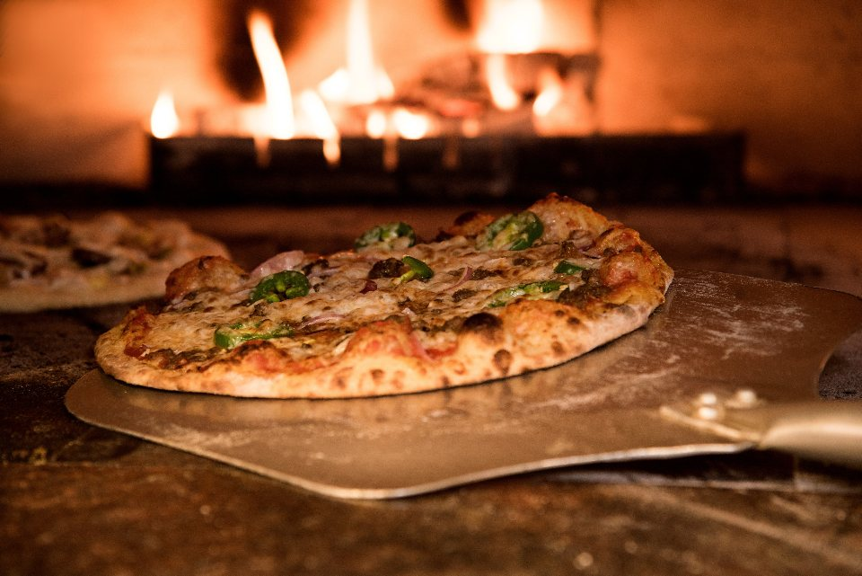
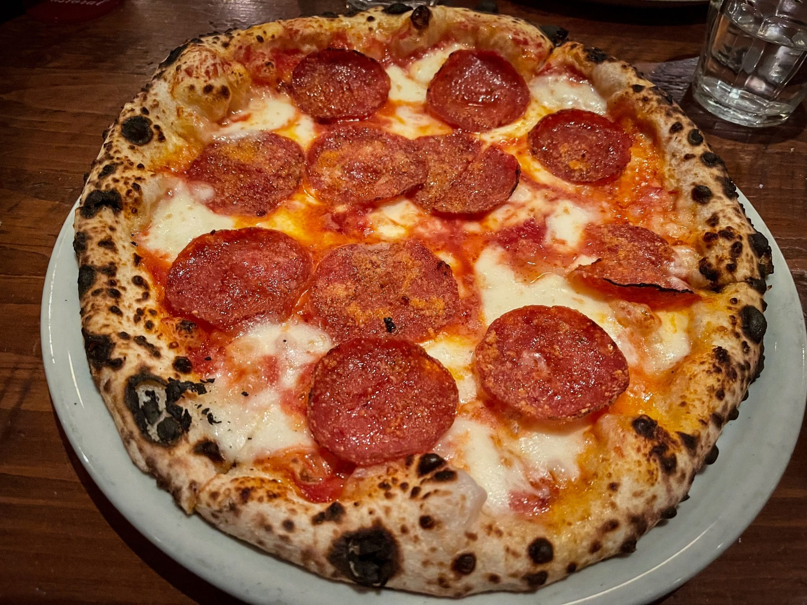

Forneria CatarinaSanta Mônica · Florianópolis
Comida feita com cuidado, do jeito da casa.
Santa Mônica, Florianópolis.
- Horário
- Abre aos domingos
- Endereço
- Avenida Madre Benvenuta, 1248
- (48) 99120-2269


Sobre
Sobre nós
Pizzas artesanais, burratas feitas por nós e uma experiência italiana completa.
Galeria
Um pouco do ambiente



Contato e localização
Confira os horários e fale com a gente pelos canais abaixo.
Horário de funcionamento
- Segunda a domingo, Feriados
- 18:00–23:50
Horários publicados no OpenStreetMap; confirme com a empresa antes de liberar o link.
Onde estamos
Avenida Madre Benvenuta, 1248 · Santa Mônica · Florianópolis · Santa Catarina
Abrir no mapa- WhatsApp(48) 99120-2269
- Telefone+55 48 3333-0707
- E-mailcontato@forneriacatarina.com.br
- Instagram@forneriacatarina